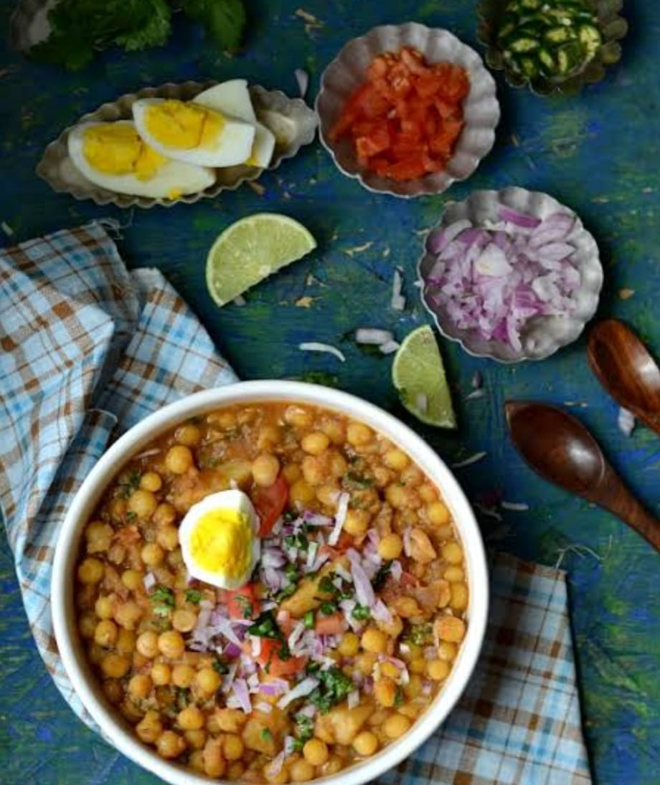

Home
Served with luchi or eaten alone,
A street-food gem, in every home.

INGRIDIENTS:
For Boiling Peas:
- 1 cup dried yellow peas (soaked overnight)
- 3 cups water
- 1/2 tsp salt
- 1/2 tsp turmeric powder
For Masala:
- 2 tbsp mustard oil (for authentic flavor)
- 1/2 tsp cumin seeds
- 1 bay leaf
- 1 medium onion (finely chopped)
- 1 medium tomato (finely chopped)
- 1 tbsp ginger paste
- 1 green chili (chopped)
- 1/2 tsp turmeric powder
- 1 tsp red chili powder
- 1 tsp cumin powder
- 1/2 tsp garam masala
- Salt to taste
- 1/2 tsp sugar (optional, for balance)
- 1 tsp tamarind paste or lemon juice (for tanginess)
INSTRUCTIONS:
-
Boil the Peas:
- Soak the dried yellow peas overnight.
- Pressure cook with water, salt, and turmeric for 2-3 whistles or until soft but not mushy.
-
Prepare the Masalsa:
- Heat mustard oil in a pan until it smokes slightly.
- Add cumin seeds and bay leaf. Let them splutter.
- Add chopped onions and sauté until golden brown.
- Stir in ginger paste and chopped green chilies. Cook for a minute.
- Add chopped tomatoes and cook until soft.
-
Cook the Ghugni:
- Add turmeric, red chili, cumin powder, salt, and sugar. Mix well.
- Pour in the boiled yellow peas along with the water. Stir and let it simmer for 5-7 minutes.
- Mash a few peas with the back of a spoon for a thicker consistency.
- Add garam masala and tamarind paste or lemon juice for tanginess. Mix well.
-
Garnish and Serve:
- Top with chopped onions, coriander leaves, and a sprinkle of bhaja masala.
- Drizzle a little mustard oil for extra depth.
- Serve hot with luchi, paratha, or as a standalone snack!
SPICE UP YOUR DAY WITH EVERY BITE!😉